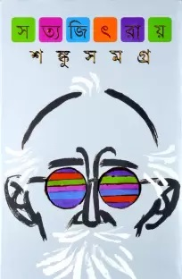

| BOOK NAME |
IMAGE |
AUTHOR |
ABOUT THE BOOK |
| The Forever War |
 |
Joe Wiilliam Haldeman |
The Forever War (1974) is a military science fiction novel by American author Joe Haldeman, telling the contemplative story about human soldiers fighting an interstellar war against an alien civilization known as the Taurans. It won the Nebula Award in 1975 and the Hugo and Locus awards in 1976. Forever Free (1999) and Forever Peace (1997) are respectively, direct and thematic sequel novels. The novella A Separate War (1999) is another sequel of sorts, occurring simultaneously with the final portion of The Forever War. Informally, the novels comprise The Forever War series; the novel also inspired a comic book and a board game.[3] The Forever War is the first title in the SF Masterworks series. |
| Twenty Thousand Leagues Under the Sea |
 |
Jules Verne |
The novel was originally serialized from March 1869 through June 1870 in Pierre-Jules Hetzel's fortnightly periodical, the Magasin d'éducation et de récréation.The book was widely acclaimed on its release and remains so; it is regarded as one of the premier adventure novels and one of Verne's greatest works, along with Around the World in Eighty Days and Journey to the Center of the Earth. Its depiction of Captain Nemo's underwater ship, the Nautilus, is regarded as ahead of its time, since it accurately describes many features of today's submarines, which in the 1860s were comparatively primitive vessels. |
| Shonku Samagra |
 |
Satyajit Ray |
Professor Trilokeshwar Shonku is a fictional scientist and inventor created by Satyajit Ray in a series of Bengali science fiction books of the same name published from 1965. He is the central protagonist of the series. Professor Shonku resides in Giridihi. His house contains a laboratory, and he lives with his pet cat, Newton, named after Sir Issac Newton and his man-servant, Prahlad. He was born in the year of 1912 but his year of death is unknown.Professor Shonku is so much famous among the people of all ages, stories of Professor Shonku bring thrill in everyone's mind. |
| The Time Machine |
 |
H. G. Wells |
The Time Machine is a science fiction novella by H. G. Wells, published in 1895. The work is generally credited with the popularization of the concept of time travel by using a vehicle or device to travel purposely and selectively forward or backward through time. The term "time machine", coined by Wells, is now almost universally used to refer to such a vehicle or device. Utilizing a frame story set in then-present Victorian England, Wells' text focuses on a recount of the otherwise anonymous Time Traveller's journey into the far future. A work of future history and speculative evolution, Time Machine is interpreted in modern times as a commentary on the increasing inequality and class divisions of Wells' era, which he projects as giving rise to two separate human species: the fair, childlike Eloi, and the savage, simian Morlocks, distant descendants of the contemporary upper and lower classes respectively. |
| Aliens in Delhi |
 |
Sami Ahmad Khan |
In the near future, the ISI and RAW discover that securing the borders of Pakistan and India is the least of their problems. An extra-terrestrial race of reptiloids prepares to invade Earth — by turning our smartphones into gene-tampering weapons. Humanity might soon be extinct.As people in Delhi start turning into alien hybrids, India gears up to face a foe unlike any other. From unveiling the actual reason behind the Chandrayaan mission to the truth about Osama bin Laden, this explosive geopolitical science-fiction thriller depicts how contemporary India responds to an alien invasion. The book is all about this. |